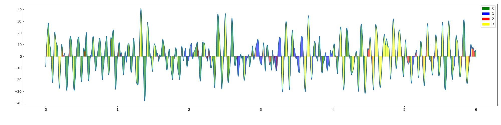
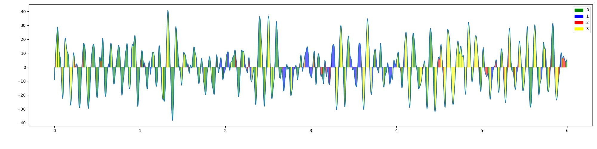

listening
imagining
listening

imagining
Clustered microstates
Listening:
Imagining:
Empirical probabilities of states
listening
1
2
3
4
0.266
0.208
0.201
0.323
imagining
1
2
3
4
0.277
0.236
0.231
0.254
Time of occurrence of each state [s]
Transition matrixes
Listening

Imagining
Entropies
listening
Maximal entropy
Actual entropy
Markov chain entropy
2.0
1.972
1.133
imagining
Maximal entropy
Actual entropy
Markov chain entropy
2.0
1.996
1.16
Gif of actual state and best fitting microstate
imagining

listening

p-values of statistical test with alpha=[0.01]
listening
Markov test order 0
Markov test order 1
Markov test order 2
Symmetry test
Conditional homogenity test
0.00E+1
3.46E-31
6.95E-9
1.78E-51
1.21E-79
imagining
Markov test order 0
Markov test order 1
Markov test order 2
Symmetry test
Conditional homogenity test
0.00E+1
6.58E-66
9.34E-23
2.91E-63
1.82E-71
listening
imagining
listening
imagining
Listening:
Imagining:
listening
| 1 | 2 | 3 | 4 |
|---|---|---|---|
| 0.266 | 0.208 | 0.201 | 0.323 |
imagining
| 1 | 2 | 3 | 4 |
|---|---|---|---|
| 0.277 | 0.236 | 0.231 | 0.254 |
Listening
Imagining
listening
| Maximal entropy | Actual entropy | Markov chain entropy |
|---|---|---|
| 2.0 | 1.972 | 1.133 |
imagining
| Maximal entropy | Actual entropy | Markov chain entropy |
|---|---|---|
| 2.0 | 1.996 | 1.16 |
imagining
listening
listening
| Markov test order 0 | Markov test order 1 | Markov test order 2 | Symmetry test | Conditional homogenity test |
|---|---|---|---|---|
| 0.00E+1 | 3.46E-31 | 6.95E-9 | 1.78E-51 | 1.21E-79 |
imagining
| Markov test order 0 | Markov test order 1 | Markov test order 2 | Symmetry test | Conditional homogenity test |
|---|---|---|---|---|
| 0.00E+1 | 6.58E-66 | 9.34E-23 | 2.91E-63 | 1.82E-71 |